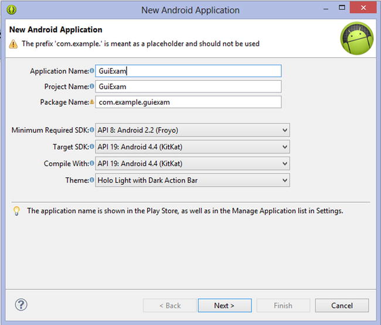
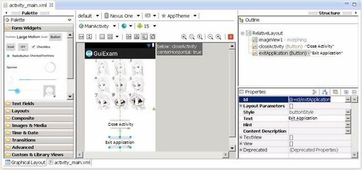

This chapter describes the state transitions of activities and discusses the Context class, intent, and the relationship between applications and activities.
State Transitions of Activities
As mentioned in Chapter 7, the activity is the most important component. Activities have their own state and transition rules, and they are the basis of what you need to understand to write Android applications.
Activity States
When activities are created or destroyed, they enter or exit the activity stack. And as they do, they transition among four possible states:
- Active: An activity in the active state is visible when it is on the top of the stack. Typically, it is the foreground activity that is responding to user input. Android will ensure that it executes at all costs. If required, Android will destroy stack activities further down to ensure required resources for the active activity. When another activity becomes active, this activity is paused.
- Paused: In some cases, an activity is visible but does not have focus. At this moment, it is suspended. When the active activity is fully transparent or is the non-full screen activity, the activity below reaches this state. Paused activities are considered active but do not accept user input events. In extreme cases, Android will kill a paused activity to restore resources to the active activity. When an activity is completely invisible, it becomes stopped.
- Stopped: When an activity is not visible, it is stopped. This activity remains in memory to save all state and member information. But when the system needs memory, this activity is “taken out and shot.” When an activity stops, it is very important to save the data and the current UI state. Once the activity exits or is closed, it becomes inactive.
- Inactive: When an activity is killed, it becomes inactive. Inactive activities are removed from the activity stack. When you need to use or display the activity, it needs to be started again.
The activity state transition diagram is shown in Figure 8-1.
Figure 8-1.
Android activity state transition diagram
State change is not artificial and is controlled entirely by the Android memory manager. Android first closes applications that contain inactive activities, followed by those with stopped activities. In extreme cases, it removes paused activities.
To ensure a flawless user experience, transition of these states is invisible to users. When an activity returns to active status from the paused, stopped, or inactive state, the UI must be nondiscriminatory. So, when an activity is stopped, it is very important to save the UI state and data. Once an activity becomes active, it needs to recover the saved values.
Important Functions of Activities
The activity state transition triggers the function of the corresponding activity class (that is, the Java method). Android calls these functions; developers do not have to explicitly call them. They are called state-transition functions. You can override the state-transition functions so they can complete their work at the specified time. There are also some functions that are used to control the state of the activity. These functions constitute the basis of activity programming. Let’s learn about those functions.
onCreate State-Transition Function
The onCreate function prototype is as follows:
void onCreate(Bundle savedInstanceState);
This function is run when the activity is first loaded. When you start a new program, its main activity’s onCreate event is executed. If the activity is destroyed (OnDestroy, explained later) and then reloaded into the task, its onCreate event participants are re-executed.
An activity is likely to be forced to switch to the background. (An activity switched to the background is no longer visible to the user, but it still exists in the middle of a task, such as when a new activity is started to “cover” the current activity; or the user presses the Home button to return to the home screen; or other events occur in the new activity on top of the current activity, such as an incoming caller interface.) If the user does not view the activity again after a period of time, the activity may be automatically destroyed by the system along with the task and process. If you check the activity again, the onCreate event initialization activity will have to be rerun.
And sometimes you may want users to continue from the last open operating state of the activity, rather than starting from scratch. For example, when the user receives a sudden incoming call while editing a text message, the user may have to do other things immediately after the call, such as saving the incoming phone number to a contact. If the user does not immediately return to the text-editing interface, the text-editing interface is destroyed. As a result, when the user returns to the SMS program, that user may want to continue from the last edit. In this case, you can override the activity’s void onSaveInstanceState (Bundle outState) events by writing the data you want to be saved before the destruction of the state of activity or information through outState, so that when the activity executes the onCreate event again, it transmits information previously saved through the savedInstanceState. At this point, you can selectively use the information to initialize the activity, instead of starting it from scratch.
onStart State-Transition Function
The onStart function prototype is as follows:
void onStart();
The onStart function executes after the onCreate event or when the current activity is switched to the background. When the user switches back to this activity by selecting it from switch panel, if it has not been destroyed, and only the onStop event has been performed, the activity will skip onCreate event activities and directly execute onStart events.
onResume State-Transition Function
The onResume function prototype is as follows:
void onResume()
The onResume function is executed after the OnStart event or after the current activity is switched to the background. When the user views this activity again, if it has not been destroyed, and if onStop events have not been performed (activities continue to exist in the task), the activity will skip onCreate and onStart event activities and directly execute onResume events.
onPause State-Transition Function
The onPause function prototype is as follows:
void onPause()
The onPause function is executed when the current activity is switched to the background.
onStop State-Transition Function
The onStop function prototype is as follows:
void onStop()
The onStop function is executed after the onPause event. If the user does not view the activity again for some time, the onStop event of the activity is executed. The onStop events are also executed if the user presses the Back key, and the activity is removed from the current task list.
onRestart State-Transition Function
The onRestart function prototype is as follows:
void onRestart()
After the onStop event is executed, if the activity and the process it resides in have not been systematically destroyed, or if the user views the activity again, the onRestart event(s) of the activity are executed. The onRestart event skips the onCreate event activities and directly executes the onStart events.
onDestroy State-Transition Function
The onDestroy function prototype is as follows:
void onDestroy()
After an onStop event of the activity, if the user does not view the activity again, it is destroyed.
The finish Function
The finish function prototype is as follows:
void finish()
The finish function closes the activity and removes it from the stack, which leads to a call to the onDestroy() state-transition function. One way to resolve this is for the user to navigate to the previous activity using the Back button.
In addition to the activity switch, the finish function triggers the activity’s state-transition function, and the startActivity and startActivityForResult methods of the context class (described in the next sections) also activate it. Functions such as Context.startActivity also cause the construction of activity objects (that is, create new ones).
Typical causes of the triggers and corresponding functions are listed in Table 8-1.
Table 8-1.
Triggers and Their Functions
Typical Trigger Cause | Corresponding Method of Activity Executed | Explanations |
|---|---|---|
Context.startActivity[ForResult]()
Note: As long as the activity is displayed and viewable on the screen, this method will be called. |
new Activity()
| |
onCreate()
| Completes the constructor function, Saves the activity object to the application object, and initializes the various controls (such as View). | |
onStart()
| Similar to View.onDraw(). | |
Activity.finish()
|
onDestroy()
| Completes the constructor function, such as removing the activity object from the application. |
Functions such as Context.startActivity in Table 8-1 trigger three actions: constructing new Activity objects, onCreate, and onStart. When an activity that is moved from off screen places to the top of the screen display (that is, displayed in front of the user), it generally only includes functions being called by onStart.
The Context Class
The Context class is an important Android concept to know. The class is inherited from the Object function, whose inheritance is as follows:
java.lang.Object
↳ android.content.Context
The literal meaning of context is the text in the adjacent area, which is located in the android.content.Context of the framework package. The Context class is a LONG type, similar to the Handle handler in Win32. Context provides the global information interface about the application environment. It is an abstract class, and its execution is provided by the Android system. It allows access to resources and characterized types of applications. At the same time, it can start application-level operations, such as starting activities and broadcasting and receiving intents.
Many methods require the caller to be identified through a context instance. For example, the first parameter of Toast is Context; and usually you use this to replace the activity, which indicates that the caller’s instance is an activity. But other methods, such as a button’s onClick (View view), cause errors if you use this. In this case, you may use ActivityName.this to solve the problem, because the class implements the context of several major Android-specific models like activities, services, and broadcast receivers.
If the parameter—especially the constructor parameter of the class (such as Dialog)—is the Context type, the actual parameters are typically activity objects, generally [this]. For example, the Dialog constructor prototype is
Dialog.Dialog(Context context)
Here’s an example:
public class MyActivity extends Activity{
Dialog d = new Dialog(this);
Context is the ancestor of most classes of Android, such as broadcasting, intents, and so on, and it provides the interface of the global information application environment. Table 8-2 lists the important subclasses of Context. You can find a detailed description in the help documentation for the Android Context class.
Table 8-2.
Important Subclasses of
Subclass | Explanation |
|---|---|
Activity
| User-friendly interface class |
Application
| Base class that provides global application state maintenance |
IntentService
| Base class used to handle asynchronous requests for the service (expressed in an Intent way) |
Service
| A component of the application that represents either a time-consuming operation that has no interaction with the user or a task that provides functionality for other application tasks |
Classes are called offspring classes because they are direct or indirect subclasses of Context and have an inheritance relationship like activities:
java.lang.Object
↳ android.content.Context
↳ android.content.ContextWrapper
↳ android.view.ContextThemeWrapper
↳ android.app.Activity
Context can be used for many operations in Android, but it main function is to load and access resources. There are two commonly used contexts: the application context and the activity context. The activity context is usually passed between a variety of classes and methods, similar to the code of onCreate for an activity, as follows:
protected void onCreate(Bundle state) {
super.onCreate(state);
TextView label = new TextView(this); // Pass context to view control
setContentView(label);
}
When the activity context is passed to the view, it means that view has a reference pointed to an activity and references resources taken by the activity: view hierarchy, resource, and so on.
You can also use the application context, which always accompanies the application’s life but has nothing to do with the activity life cycle. The application context can be acquired with the Context.getApplicationContext or Activity.getApplication method.
Java usually uses a static variable (singleton and the like) to synchronize states between activities (between classes inside a program). Android’s more reliable approach is to use the application context to associate these states.
Each activity has a context, which contains the runtime state. Similarly, an application has a context that Android uses to ensure that it is the only instance of that context.
If you need to make a custom application context, first you must define a custom class that inherits from android.app.Application; then describe the class in the application’s AndroidManifest.xml file. Android automatically creates an instance of this class. By using the Context.getApplicationContext() method, you can get the application context inside each activity. The following example code gets the application context in the activity:
class MyApp extends Application {
// MyApp is a custom class inherited from android.app.Application
public String aCertainFunc () {
......
}
}
class Blah extends Activity {
public void onCreate(Bundle b){
... ...
MyApp appState = ((MyApp)getApplicationContext());
// Get Application Context
appState.aCertainFunc();
//Use properties and methods of the application
... ...
}
}
You can get global information about the application environment using the get function of Context. The main functions are shown in Table 8-3 and are either ContextWrapper or direct context methods.
Table 8-3.
Commonly Used Methods for Obtaining Context
Function Prototype | Function |
|---|---|
abstract Context ContextWrapper.getApplicationContext ()
| Returns the current process corresponding to the global context of a single application. |
abstract ApplicationInfo ContextWrapper.getApplicationInfo ()
| Returns the context package corresponding to the information of the entire application. |
abstract ContentResolver ContextWrapper.getContentResolver ()
| Returns the content-resolver instance of the corresponding application package. |
abstract PackageManager ContextWrapper.getPackageManager ()
| Returns the package-manager instance for finding all package information. |
abstract String ContextWrapper.getPackageName ()
| Returns the current package name. |
abstract Resources ContextWrapper.getResources ()
| Returns the resource instance of the (user) application package. |
abstract SharedPreferences ContextWrapper.getSharedPreferences (String name, int mode)
| Finds and holds the contents of the preference file whose name is specified by the parameter name. Returns the value of the shared preferences (SharedPreferences) that you can find and modify. When using a proper name, only one instance of SharedPreferences is returned to the caller, which means once the changes are complete, the results are shared with each other. |
public final String Context.getString (int resId)
| Returns a localized string from the application package’s default string table. |
abstract Object ContextWrapper.getSystemService (String name)
| Returns processing system-level services according to the name specified by the variable name. The returned object classes vary based on the name of the request. |
Introduction to Intent
Intent can be used as a message-passing mechanism to allow you to declare intent to take an action, usually with specific data. You can use intent to implement interaction between components of any application on Android devices. Intent turns a group of independent components into systems with one-to-one interactions.
It can also be used to broadcast messages. Any application can register a broadcast receiver to listen and respond to these intent broadcasts. Intent can be used to create internal, system, or third-party event-driven applications.
Intent is responsible for the description of an operation and the action data of the application. Android is responsible for finding the corresponding component described under the sub-intent, passing intent to the component being called, and completing the component calls. Intent plays the decoupling role between the caller and the one who is called.
Intent is a mechanism of runtime binding; it can connect two different components in the process of running the program. Through intent, the program can request or express willingness to Android; Android selects the appropriate components to handle the request based on the contents of the intent. For example, suppose an activity wants to open a web browser to view the content of a page; this activity only needs to issue a WEB_SEARCH_ACTION request to Android. Based on the content request, Android will check the intent filter declared in the component registration statement and find an activity for a web browser.
When an intent is issued, Android finds one or more exact matches for the activity, service, or broadcastReceiver as a response. Therefore, different types of intent messages do not overlap and are not simultaneously sent to an activity or service, because startActivity() messages can be sent only to an activity and startService() intents can only be sent to a service.
The Main Roles of Intent
The main roles of intent are as follows.
Triggering a New Activity or Letting an Existing Activity Implement the New Operation
In Android, intent directly interacts with the activity. The most common use of intent is to bind application components. Intent is used to start, stop, and transfer application activities. In other words, intent can activate a new activity or make an existing activity perform a new operation. This can be accomplished by calling the Context.startActivity() or Context.startActivityForResult() method.
To open a different interface (corresponding to an activity) in an application, you call the Context.startActivity() function to pass an intent. Intent can either explicitly specify a specific class to open or include an action required to achieve the goals. In the latter case, the runtime will choose which activity to open, using a well-known process of intent resolution in which the Context.startActivity() finds and starts a single activity that best matches the intent.
Triggering a New Service or Sending New Requests to Existing Services
Opening a service or sending a request to an existing service is also completed by the intent class.
Trigger BroadcastReceiver
You can send BroadcastIntent using three different methods: Context.sendBroadcast(), Context.sendOrderedBroadcast(), and Context.sendStickyBroadcast().
Intent Resolution
The intent transfer process has two ways to match target consumers (such as another activity, IntentReceiver, or service) with the respondents of the intent.
The first is explicit matching, also known as direct intent. When constructing an intent object, you must specify the recipient as one of the intent’s component properties (by calling setComponent (ComponentName) or setClass (Context, Class)). By specifying a component class, the application notification starts the corresponding components. This method is similar to an ordinary function call but varies in the reuse of the granularity.
The second is implicit matching, also known as indirect intent. The sender of the intent does not know or care who the recipient is when constructing an intent object. The attribute is not specified in the component intent. This intent needs to contain sufficient information so that the system can determine which components to use out of all those available to meet this intent. This method differs significantly from function calls and helps to reduce coupling between the sender and receiver. Implicit matching resolves to a single activity. If there are multiple activities that can implement a given action based on particular data, Android selects the best one to start.
For direct intent, Android does not need to do parsing because the target component is very clear. However, Android needs to resolve indirect intent. Through analysis, it maps the indirect intent to the activity, IntentReceiver, or service that processes the intent.
The mechanism of intent resolution mainly consists of the following:
- Looking for all <intent-filter>s and the intent defined by those filters, which are registered in AndroidManifest.xml
- Finding and handling the component of the intent through PackageManager (PackageManager can get information about the application package installed on the current device)
Intent filters are very important. A non-declared <intent-filter> component can only respond to explicit intent requests that the component name matches, but it cannot respond to implicit intent requests. A declared <intent-filter> component can respond to either explicit intent or implicit intent requests. When resolving implicit intent requests, Android uses three attributes of the intent—action, type, and category—to make the resolution. The specific resolution methods are described next.
Action Test
A <intent-filter> element should contain at least one <action>, or no intent requests can be matched to the <intent-filter>. If the action requested by an intent has at least one match of an <action> in <intent-filter>, then the intent passed the action test of this <.
If there is no description of a specific action type in the intent request or <intent-filter>, then one of the two following tests applies:
- If <intent-filter> does not contain any action type, regardless of what the intent requests are, there is no match to this <intent-filter>.
- If the intent request has no set action type, as long as the <intent-filter> contains an action type, this intent request will successfully pass the action test of <intent-filter>.
Category Test
For an intent to pass the category test, every category in the Intent must match a category in the filter. When every category of intent requests have exact matches with the <category> of one <intent-filter> of the components the intent request pass the test. The excess <category> declaration of <intent-filter> does not cause the match failure. Any <intent-filter> that does not specify a category test only matches intent requests that the configuration is not set for.
Data Test
The <data> element specifies a data URI and data type of the intent request that you want to receive. A URI is divided into three parts that match: scheme, authority, and path. The URI data type and scheme of the Internet request set by setData() must be the same as specified in <intent-filter>. If <intent-filter> also specifies authority or path, they have to match to pass the test.
This decision process can be expressed as follows:
- If the intent specifies the action, then the action list of the <intent-filter> of the target component must contain this action. Otherwise, it is not considered matched.
- If the intent does not provide a type, the system gets the data types from the data. And for some action methods, the target component’s data-type list must contain the data type of the intent. Otherwise it cannot be matched.
- If the data for the intent is not the URI of the content, and the category and intent also do not specify its type, the matching is based on the data scheme of the intent (for instance, http: or mailto:), and the intent’s scheme must appear in the scheme list of the target component.
- If the intent specifies one or more categories, these categories must all appear in the category list of the component. For instance, if the intent contains two categories, LAUNCHER_CATEGORY and ALTERNATIVE_CATEGORY, the target component obtained by the parsing must contain at least these two categories.
The Relationship between Applications and Activities
Beginners tend to get confused between applications and activities—in particular, the main activities (those that occur when the application starts). In fact, they are two completely different objects. The behaviors, attributes, and so forth are not the same. Following is a list of differences between applications and activities:
- No matter how many times an application starts, as long as it is not shut down, its value (that is, the object) is constant. It has only one instance.
- No matter where an application starts, as long as it is not closed, its value (that is, the object) is constant. It has only one instance.
- When an activity is not finished, its value (that is, the object) is constant. Each time onStart() is called, the activity displays on the screen front.
- The objects that startActivity starts are different each time. You can say that startActivity actually contains new objects.
- Although you cannot get a new activity object after startActivity, the Android framework can send parameter values (similar to the actual parameter of the function call) when startActivity starts its corresponding activity objects.
- Even more surprising is that Android can have an activity coexist in multiple objects. When an activity is closed, Android returns the results to the main activity started through startActivity. As a result, it automatically calls the onActivityResult() method that starts its activity object, and random distribution can be avoided.
- An application can have multiple objects of an activity.
The Basic Android Application Interface
In this section, you use an example to learn about Android development using the Android SDK integrated in the Eclipse IDE. You create an application named GuiExam using the Android SDK and learn about the Android interface design by following the steps of the process.
GuiExam Application Code Analysis
This section provides analysis of the GuiExam sample application. First, let’s create the GuiExam application using the Android SDK in Eclipse. For the application name, type GuiExam. For the Build SDK, choose API 19, which includes the x86 instructions. As shown in Figure 8-2, select the system default configurations for all other entries.

Figure 8-2.
Initial setup when generating the GuiExam project
The file structure of the project is shown in Figure 8-3, and the user interface is shown in Figure 8-4.
Figure 8-3.
File structure of the GuiExam application
Figure 8-4.
The application interface of GuiExam
The source code of the application’s only Java file (MainActivity.java) is shown in Figure 8-5:
Figure 8-5.
The typical source codes in Java file MainActivity.java
You know the MainActivity.OnCreate() function is called when the event is created. The source code of the function is very simple. The superclass function is called in line 12, and the setContentView function is called in line 13. This function sets the UI display of the activity. In the Android project, most of the UI is realized by the view and view subclasses. View represents a region that can handle the event and can also render this region.
The code in line 13 indicates that the view is R.layout.activity_main. The auto-generated R.Java file under the gen directory of the project includes code such as this (excerpted):
Line # Source Code
......
8 package com.example.guiexam;
9
10 public final class R {
......
26 public static final class layout {
27 public static final int activity_main=0x7f030000;
28 }
29 public static final class id {
30 public static final int menu_settings=0x7f080000;
31 }
32 public static final class string {
33 public static final int app_name=0x7f050000;
34 public static final int hello_world=0x7f050001;
35 public static final int menu_settings=0x7f050002;
36 public static final int title_activity_main=0x7f050003;
37 }
......
41 }
You can see that R.layout.activity_main is the resource ID of the main layout file activity_main.xml. This file reads as follows:
Line# Source Code
3 android:layout_width="match_parent"
4 android:layout_height="match_parent" >
5
6 <TextView
7 android:layout_width="wrap_content"
8 android:layout_height="wrap_content"
9 android:layout_centerHorizontal="true"
10 android:layout_centerVertical="true"
11 android:padding="@dimen/padding_medium"
12 android:text="@string/hello_world"
13 tools:context=".MainActivity" />14
15 </RelativeLayout>
The first line of this code indicates that the content is a RelativeLayout class. By checking the Android help documentation, you can see that the inheritance relationship of RelativeLayout is
java.lang.Object
↳ android.view.View
↳ android.view.ViewGroup
↳ android.widget.RelativeLayout
This class is indeed seen as a view class. This layout contains a TextView class, which is also the offspring class of the view. Line 12 indicates that its text property is @string/hello_world and its display text is the contents of the variable hello_world in strings.xml: “Hello world!”
As a superclass of the layout, ViewGroup is a special view that can contain other view objects or even ViewGroup itself. In other words, the ViewGroup object treats the objects of other views or ViewGroups as member variables (called properties in Java). The internal view objects contained in ViewGroup objects are called widgets. Because of the particularity of the ViewGroup, Android makes it possible for a variety of complex interfaces for applications to be automatically set.
Using Layouts as Interfaces
You can modify or design layouts as part of the application interface design. For example, you can modify the activity_main.xml file as follows:
1.
Change TextView’s Text property to “Type Here”.
2.
Pick a button widget from the Form Widgets column, and drop it into the activity_main screen. Set its Text property to “Click Me”, as shown in Figure 8-6.
Figure 8-6.
Modifying the GuiExam layout to add a button
3.
Drag a plain text widget from the Text Fields section of the left column and drop it into the activity_main screen. Change the Width property under the layout parameters branch to fill_parent, and then drag plain text until it fills the entire layout, as shown in Figure 8-7.
Figure 8-7.
Modifying the GuiExam layout to add a text-edit widget
Figure 8-8.
The user interface of GuiExam after the layout has been modified
From these examples, you can see the general structure of the interface. The activity set through setContentView (layout file resource ID) is: the activity contains a layout, and the layout contains various widgets, as shown in Figure 8-9.
Figure 8-9.
Interface structure of the activity
You may be wondering why Android introduced this layout concept. In fact, this is a developer-favored feature of Android, compared to the programming interface of Windows Microsoft Foundation Class (MFC). The layout isolates differences in screen size, orientation, and other details on the device, which makes the interface screen adaptive to a variety of devices. So, applications running on different device platforms can automatically adjust the size and position of the widget without the need for user intervention or code modification.
For example, the application you created can run on different Android phones, tablets, and television device platforms without your needing to change any code. The location and size of the widget are automatically adjusted. Even when you rotate a phone 90 degrees, the interface for portrait or landscape mode is automatically resized and maintained in its relative position. The layout also allows widgets to be arranged according to local national habits (most countries arrange them from left to right, but some countries arrange them from right to left). The details that need to be considered for the interface design are all completed by the layout. You can imagine what would happen if there were no layout classes—you would have to write code for each Android interface layout for each device. The complexity of this level of work is unthinkable.
Using the View Directly as an Interface
Earlier you saw an interface structure and code framework for activities. You also saw that most of the UI is implemented by the view and view subclasses. So, you can use the setContentView function to specify a view object, instead of a layout. The prototype of the setContentView function of the activity class includes the following.
This function sets a layout resource as the interface of the activity:
void setContentView(int layoutResID)
The first type of the function sets an explicit view as the interface of the activity:
void setContentView(View view)
The 2nd type f the function sets an explicit view as the interface of the activity, according to the specified format:
setContentView(View view, ViewGroup.LayoutParams params)
Here you work through an application example that uses the view directly as an activity interface, using the second function setContentView()You can modify the code of the MainActivity.java file as follows:
......
import android.widget.TextView;
public class MainActivity extends Activity {
@Override
public void onCreate(Bundle savedInstanceState) {
super.onCreate(savedInstanceState);
TextView tv = new TextView(this); // Create a TextView Object that belongs to current Activity
tv.setText("Hello My friends!"); // Set Display text of TextView
setContentView(tv); // Set View as the main display of the Activity
}
The application interface is shown in Figure 8-10.
Figure 8-10.
GuiExam sets the view directly as the interface
In this case you have TextView widgets, which are direct descendant classes of the view, as the application interface; they are set directly in the setContentView function. This way, the text displayed by the TextView becomes the output of the application interface. To use the TextView class, you use an import android.widget.TextView statement at the beginning of the file to import the package of the class.
Component ID
Now let’s go back and look at the application layout shown in Figure 8-6. The ID attribute of the added text-edit widget in the layout is @ + id/editText1, and the button’s ID property is @ + id/button1 (as shown in Figure 8-5). What does that mean?
Let’s look at the R.java file (excerpted):
Line # Source Code
......
8 package com.example.guiexam;
9
10 public final class R {
......
22 public static final class id {
23 public static final int button1=0x7f080001;
24 public static final int editText1=0x7f080002;
25 public static final int menu_settings=0x7f080003;
26 public static final int textView1=0x7f080000;
27 }
28 public static final class layout {
29 public static final int activity_main=0x7f030000;
30 }
......
43 }
Compared with the R.java file in the “GuiExam Application” section, you can see that lines 23 and 24 are new; they are the resource ID number of the newly added button and text-edit box. The type is int, which corresponds to the ID attribute values of these widgets. From the R.java file, you can find the ID of these widgets—the static constant R.id.button1 is the resource ID of the widgets (buttons) for which the ID attribute value is @ + id/button1, and the static constant R.id.editText1 is the resource ID of the widgets (text edit) for which the ID attribute value is @ + id/editText1. What’s the reason for this? Let’s see.
Android components (including widgets and activities) need to use a value of type int as a tag This value is the ID attribute value of the component tag. The ID attribute can only accept a value of resources type. That is, the value must start with @, ; for example, @ id/abc, @+id/xyz, and so on.
The @ symbol is used to prompt the parser for XML files to parse the name behind the @. For example, for @string/button1, the parser reads the button1 value of this variable from values/string.xml.
If the + symbol is used right after the @, it means that when you modify and save a layout file, the system will automatically generate the corresponding type int variables in R.java. The variable name is the value after the / symbol; for example, @+id/xyz generates int xyz = value in R.java, where the value is a hexadecimal number. If the same variable name xyz already exists in R.java, the system does not generate a new variable; instead, the component uses this existing variable.
In other words, if you use the @+id/name format and a variable named name exists in R.java, the component will use the value of the variable as an identifier. If the variable does not exist, the system adds a new variable, and the corresponding value for the variable is assigned (not repeated).
Because the component’s ID attribute can be a resource ID, you can set any existing resource ID value: for example, @drawable/icon, @string/ok, or @+string/. Of course, you can also set a resource ID that already exists in the Android system, such as @id/android:list, in which the android: modifier in the ID indicates the package where the R class of the system is located (in the R.java file). You can enter android.R.id in the Java code-editing zone, which lists the corresponding resource ID. For example, you can set the ID property value this way.
For the reason just described, you generally set the ID attributes of Android components (including widgets, activities, and so on) to the @+id/XXX format. And you use R.id.XXX to represent the component’s resource ID number in the program.
Buttons and Events
In the example in the section “Using Layouts as Interfaces,” you created an application that includes Button, EditText, and other widgets, but nothing happens when the button is clicked. This is because you did not assign a response to the click event. This section first introduces Android events and the basics of the listener functions. You review and further explore more advanced knowledge about events in future chapters covering Android’s multithreaded design.
In Android, each application maintains an event loop. When an application starts, it completes the appropriate initialization and then enters the event loop state, where it waits for a user action such as clicking the touch screen, pressing a key (a button), or some other input operation. User action triggers the program to generate a response to the event; the system generates and distributes the corresponding event class to handle it according to the event location, such as Activity or View. The callback methods are integrated into an interface called the event listener. You can achieve the specified event response by overriding the abstraction functions of the interface.
The scope of the event received by different classes is different for each class. For example, the Activity class can receive keypress events but not touch events, whereas the View class can receive both touch and keypress events. In addition, the event attribute details received by different classes also vary. For example, the touch event received by the View class consists of a number of touch points, coordinate values, and other information. It is subdivided into pressing down, bouncing, and moving events. But the Button class, which is a descendent of the View class, only detects a pressing action, and the event does not provide the coordinates of touch points or other information. In other words, Button processes the original event of the view and integrates all touch events into one event that records whether it is clicked or not.
Most of the incident-response interfaces of the View class use Listener as a suffix, so it is easy to remember their association with the event-listener interface. Table 8-4 shows examples of a number of classes and their incident-response functions.
Table 8-4.
Examples of Classes and Their Incident-Response Functions
Class | Event | Listener Interface and Function |
|---|---|---|
Button
| Click |
onClick() function of the onClickListener Interface |
RadioGroup
| Click |
onCheckChange() function of the onCheckChangeListener Interface |
View
| Drop-down list |
onTouch() function of the TouchListener interface |
Input focus changes |
onFocusChange() function of the onFocusChangeListener interface | |
Button |
onKey() function of the onKeyListener interface |
The process to respond to events is as follows. First, define the implementation class of your listener interface and override the abstract function. Second, call functions such as set ... Listener(). Then set the implementation class of the custom monitor interface to the event listener of the corresponding objects.
For example, you can modify the application source to execute an incident response. There are many coding styles to implement a Java interface. The next section discusses several ways in which the results of the code running these styles is the same.
Inner Class Listener
Modify the MainActivity.java code as follows (the bold text is added or modified):
Line # Source Code
1 package com.example.guiexam;
2 import android.os.Bundle;
3 import android.app.Activity;
4 import android.view.Menu;
5 import android.view.MenuItem;
6 import android.support.v4.app.NavUtils;
7 import android.widget.TextView;
8
import android.widget.Button; // Use Button class
9
10
import android.view.View; // Use View class
11
import android.view.View.OnClickListener; // Use View.OnClickListener class
12
import android.util.Log;
13
// Use Log.d debugging function
public class MainActivity extends Activity {
14 private int iClkTime = 1;
15
16
// Count of Button Click
17
@Override
18 public void onCreate(Bundle savedInstanceState) {
19 super.onCreate(savedInstanceState);
20 setContentView(R.layout.activity_main);
21
22 Button btn = (Button) findViewById(R.id.button1);
23
// Obtain Button object based on the resource ID number
24 final String prefixPrompt ="This is No. ";
25
// Define and set the value of the variable passed
26 final String suffixPrompt ="time(s) that Button is clicked";
27
// Define and set the value of the variable passed
28 btn.setOnClickListener(new /*View.*/OnClickListener(){
29
// Set the event response class of Button's click
30
31 public void onClick(View v) {
32 Log.d("ProgTraceInfo",prefixPrompt + (iClkTime++) + suffixPrompt);
}
});
}
@Override
public boolean onCreateOptionsMenu(Menu menu) {
getMenuInflater().inflate(R.menu.activity_main, menu);
return true;
}
}
On lines 18‒22, you get the corresponding objects based on the resource ID of EditText and TextView, respectively. To use OnClickListener as an internal class, you add the final modifier in front of the variable. In lines 23 and 24, as the response code of the Button clicks, you first get the contents of EditText using EditText.getText(). Because the function returns a value of type Editable, you convert the type Editable to the type String via the CharSequence.toString() function (CharSequence is a superclass of Editable). Then you call the TextView.setText (CharSequence text) function to refresh the TextView display.
In Android, the accessor functions of a class attribute usually start with set/get, such as the read/write functions of the EditText contents:
Editable getText()
void setText(CharSequence text, TextView.BufferType type)
The interface of this application is shown in Figure 8-11; (a) is the start screen, (b) is the screen after text is entered in the edit text box, and (c) shows the application screen after the button is clicked.
Figure 8-11.
The interface of the application with a TextView, a Button, and an EditText
Using ImageView
Previous sections discussed typical uses of widgets and showed the basic concepts of widget programming. The image is the foundation of multimedia applications and is thus a major part of Android applications. This section introduces the use of the image/picture display widget, ImageView. Through the examples in this section, you learn how to use ImageView and add files to the project’s resources.
The following example was originally developed in the section when you created the GuiExam application. Follow these steps to add a picture file to the project:
1.
Copy the image file (in this case, morphing.png) into the corresponding /res/drawable-XXX project directory (the directory in which to store project files of different resolution images), as shown in Figure 8-12.
Figure 8-12.
Copy the image file into the project’s res directory
2.
Open the project in Eclipse, and press the F5 key to refresh the project. You can see the file added to the project in Package Explorer (in this case, morphing.png), as shown in Figure 8-13.
Figure 8-13.
The Package Explorer window after the image is added
To place ImageView widgets in the layout, follow these steps:

1.
Click to select the TextView widget of the “Hello world!” project, and then press the Del key to remove the widget from the layout.
2.
In the editor window of layout.xml, locate the Image & Media branch, and drag and drop the ImageView of this branch to the layout file. When the Resource Chooser dialog box pops up, click and select the Project Resource, select the just-imported picture file under the project, and click OK to complete the operation. This process is shown in Figure 8-14.
Figure 8-14.
Place the ImageView widget in the layout
3.
Adjust the size and position of the ImageView, and set its properties. This step can use the default values shown in Figure 8-15.
Figure 8-15.
The property settings of the ImageView
4.
Save the layout file.
Normally, at this point, you would have to compile the Java code. However, in this example, compiling is not necessary. Figure 8-16 shows the application’s interface.
Figure 8-16.
Application interface of the ImageView
Exit Activities and Application
In the previous example, you can press the phone’s Back button to hide the activity, but doing so does not close the activity. As you saw in the section “State Transitions of Activities,” when the Back button is pressed, started activities only change from the active state to the non-active state and remain in the system stack. To close these activities and remove them from the stack, you should use the finish function of the Activity class.
However, closing activities does not mean the application process ends. Even if all the components of the application (activity, service, broadcast intent receiver, and so on) are closed, the application process continues to exist. There are two main ways to exit the application process.
One is the static function System.exit that Java provides to forcibly end the process; another is the static function Process.killProcess (pid) provided by Android to terminate the specified process ID (PID). You can pass the Process.myPid() static function to get the application’s process ID.
You can use these methods for the example in the section “Using ImageView.” The specific steps are as follows:
1.
Add two buttons to the layout file with the Text property “Close Activity” and “Exit Application” respectively and ID attributes @+id/closeActivity and @+id/exitApplication respectively. Adjust the buttons’ size and position, as shown in Figure 8-17.

Figure 8-17.
Add Close Activity and Exit Application buttons in the layout
2.
Modify the source code of the MainActivity.java file as follows (the bold code is either added or modified, and the lines with strikethrough indicate deleted code):
Line # Source Code
1 package com.example.guiexam;
2 import android.os.Bundle;
3 import android.app.Activity;
4 import android.view.Menu;
5
//import android.view.MenuItem;
6
//import android.support.v4.app.NavUtils;
7
import android.widget.Button; // Use Button class
8
import android.view.View; // Use View class
9
import android.view.View.OnClickListener; // Use View.OnClickListenerClass
10
import android.os.Process; // Use killProcess method
11 public class MainActivity extends Activity {
12 @Override
13 public void onCreate(Bundle savedInstanceState) {
14 super.onCreate(savedInstanceState);
15 setContentView(R.layout.activity_main);
16 Button btn = (Button) findViewById(R.id.closeActivity);
17
// Get Button object of <Closed activity>
18 btn.setOnClickListener(new /*View.*/OnClickListener(){
19
// Set response code for Clicking
20 public void onClick(View v) {
21 finish(); // Close main activity
22 }
23 });
24 btn = (Button) findViewById(R.id.exitApplication);
25
// Get Button object of <Exit Application>
26
// Set the response code to Clicking
27 public void onClick(View v) {
28 finish(); // close main activity
29 Process.killProcess(Process.myPid()); // Exit application process
30 }
31
32
33
34
35 });
}
@Override
public boolean onCreateOptionsMenu(Menu menu) {
getMenuInflater().inflate(R.menu.activity_main, menu);
return true;
}
}
In lines 5 and 6, you remove the unused import statements. You set the response code for the Close Activity button in lines 16‒21 and set the response code for the Exit Application button in lines 22‒28. The only difference is that the latter adds the application-exit code Process.killProcess (Process.myPid ())
. Both buttons use the same finish() function of the Activity class to close the activity. The code in lines 7‒10 imports related classes.
The application interface is shown in Figure 8-18.
Figure 8-18.
The Close Activity and Exit Application interface of the application
When you click the Close Activity or Exit Application button, the main interface of the application is turned off. The difference is that the application process (com.example.guiexam) does not quit for Close Activity; but for Exit Application, the process closes. This is clearly shown in the Devices pane of the DDMS view in Eclipse, in which you can see a list of processes on the target machine, as shown in Figure 8-19.
Figure 8-19.
The process in DDMS when the Close Activity and Exit Application application is running
Summary
This chapter introduced Android interface design by having you create a simple application called GuiExam. You learned about the state transitions of activities, the Context class, intent, and the relationship between applications and activities. You also saw how to use the layout as an interface by changing the layout file activity_main.xml, and you saw how the button, event, and inner event listeners work. The next chapter describes how to create an application with multiple activities using the activity-intent mechanism and shows the changes needed in the AndroidManifest.xml file.